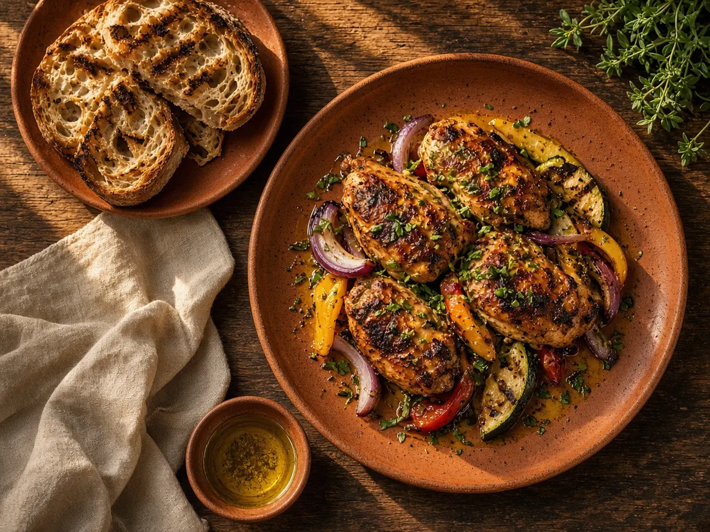

Our story
Fire, figs & friends
An invented story written to show how a restaurant site can carry a voice.

We started with one grill, a fig tree in the yard, and too many friends for the table. The cooking was simple: good ingredients, real fire, and time. Brasa & Fig keeps that spirit, with a hearth at the center of the room and a menu that follows the seasons.
Our wine list is short and changes often. The bread is baked every morning in the same oven that roasts dinner.